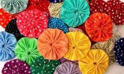

O fuxico é uma técnica artesanal brasileira de reaproveitamento de retalhos, criando flores e formas franzidas com agulha e linha. Feito dobrando e alinhavando círculos de pano, é versátil, de baixo custo e usado em colchas, moda, decoração e acessórios, simbolizando resistência e criatividade popular.
O fuxico é uma técnica que tem suas origens na cultura popular do povo do Nordeste brasileiro. Nas mãos de mulheres escravizadas, que aproveitavam retalhos e sobras de tecidos das senhoras de engenho, eram cortados pequenos círculos que eram alinhavados nas extremidades até formar uma trouxinha.
O fuxico é uma roseta feita de tecido, geralmente retalhos e sobras de tecido, usada como um aplique em bordados, quilt, scrapbooking etc.
A palavra fuxico pode ser entendida como coser ligeiramente grandes pontos como também, fazer intrigas e mexericos. No Brasil sua origem vem da cultura popular nordestina onde as mulheres reuniam-se para emendar pedaços de tecidos e aproveitavam para conversar; daí o duplo sentido da palavra fuxico.
O nome “fuxico” vem do verbo “fuxicar”, que no passado era associado às rodas de conversa entre mulheres que se reuniam para costurar e conversar. Com o tempo, o fuxico artesanato deixou de ser apenas um passatempo caseiro e ganhou espaço nas feiras de arte, lojas de decoração, moda e até no design contemporâneo.
A palavra "fuxico" tem origem africana e significa "remendo" ou "alinhavo com agulha e linha", segundo o Cultura.PE. A técnica do fuxico, como forma de artesanato, é associada à cultura africana, onde as mulheres escravizadas usavam retalhos de tecido para criar peças úteis e decorativas,
Escolher 2 dos objetos a seguir, colocando em prática as bases citadas no item 5 desta especialidade:
O objetivo da oficina é ensinar a técnica de confecção do fuxico, com possível geração de renda, e, ao mesmo tempo, estimular o desenvolvimento da escrita.